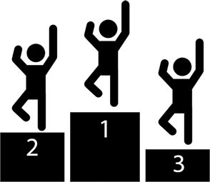

No matter who you are, what gender you are, how old you are or where you are from, you are always struggling to have some sort of identity in this world. You ought to make a name for yourself - this concept is repeated to us since the day we are born. So we struggle, in school for grades, in playground to be the leader, in life for attention. We get told that if we are good at what we do, we will get whatever we want. You will always hear people saying “Hard work always pays off” and it will be end of struggles. I disagree with that. Becoming good or better at something is an endless struggle in itself. And what is even the point of it?
I was watching few videos on Youtube on TED channel and the likes, and what I realized was that there are some really smart people out there. They are a tiny fraction of 7 billion collective population of this world, only a few hundred and they are awesome. For some days I thought what chance I have of being up there, at the top?
Turns out, it doesn’t matter.
One, because, the top, as we know it, doesn’t exist. Believing that there is a top, is putting limits on ourselves. While I fuss over how to reach where someone else is, that someone is already trying to catch up to someone else.
And two, because doing something just to achieve something, becomes a chore, sooner or later. When I looked closer at people, who I thought were at the top of their domains, I found they are there because they love what they are doing, and they are doing what they love.
I am very fortunate that I am a Software Engineer. Computers and puzzles have always been my passion. I am solving everyday puzzles using computers.
It took me a while to figure out that if I keep trying to be better than someone else, I will never get anywhere and will run out of motivation. If I am doing it just because I love it, it won’t matter where I stand.
I remember when I was a kid, my dad bought me a handheld gaming device. It wasn’t anything like Playstation Vita or Nintendo DS. It had a few simple games like the famous ‘Snakes’, Car Race and Tetris. I played with it almost every waking moment except when I was in class. I played it because it was fun, I wasn’t trying to beat anyone’s score, hell I wasn’t trying to beat even my own score. It was first time in my life that I became passionate about something. Unfortunately one day my little sister accidently broke the Game (actually she threw it on me with intention to hit me, she missed). I didn’t become passionate about anything else, until in 9th grade, I got my very own Desktop Computer.
For years, I played with it. Learning it inside and out. I opened it the week I bought it. I was trying to see how a processor looked like (I didn’t have Internet then). In process I borked the motherboard. It was replaced since System was still under warrenty, but I got a good scolding from Dad for messing it up. I was forbidden to touch the system for a week. So after a week, when I got my access privileges back, I opened it again. Not only I found how the processor looked, In 2 weeks of purchasing it, I learned to completely disassemble and then reassemble it. It was fun.
It was FUN.
I enrolled myself for a degree in Computer Applications. The Indian education system fucks you up. I found myself learning computers for sake of grades. After completing degree, I was learning so I can get a better job. After I got the job I was learning so I can become better than my colleagues or people in my field of work.
The worse thing I did? I took advice from the Internet. Internet is filled with advice on being productive. Set targets, make goals, do something tangible. That’s all good and dandy, but what it fails to tell you that, don’t forget to have fun. If you are having fun, it is ok to miss targets once in awhile.
Maybe I was a bit slow to realize this, but in a world of 7 billion people, it doesn’t matter where you stand among them, what matters is that wherever you are, you are having fun.
Feel free to comment on the post but keep it clean and on topic.
blog comments powered by Disqus